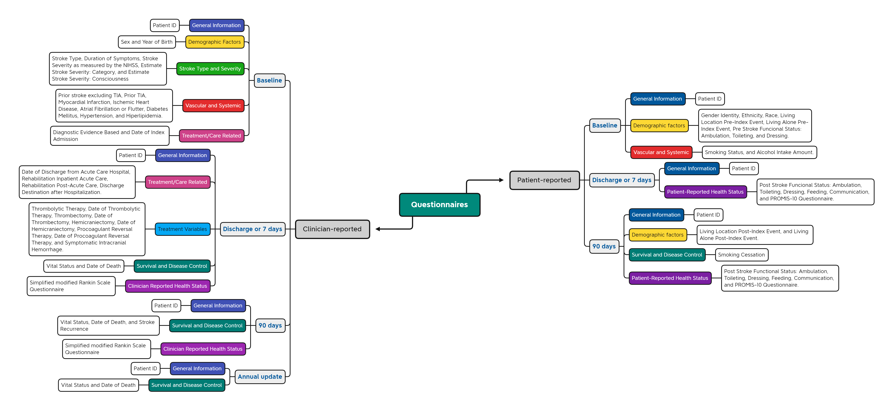

Molic-AVC Project: Monitoring the Stroke Clinical Pathway
1.0.1 - ci-build
Molic-AVC Project: Monitoring the Stroke Clinical Pathway - Local Development build (v1.0.1). See the Directory of published versions
The International Consortium for Health Outcomes Measurement ICHOM aims to empower value-based healthcare by defining globally a Patient-Centered Health Outcome Measure Sets, which involve considerations of outcomes reported by healthcare professionals as well as patients, in order to promote the adoption, reporting, and benchmarking of these measures on a global scale, with the goal of generating better health outcomes for all involved.
So far, Patient-Centered Health Outcome Measure Sets have been defined for 45 different clinical conditions and specific patient populations through the gathering of global teams of patient advocates, healthcare professionals, and researchers, representing more than 50% of the global disease burden, as described on this page.
To facilitate the adoption and implementation of these ICHOM Patient-Centered Health Outcome Measure Sets in healthcare, health information technology systems need them to be published in an interoperable form, and in a machine-readable format based on open standards. This will facilitate the semantically interoperable collection of the necessary measurements along the patient care pathway, as well as the subsequent reporting of outcomes based on these measurements. With this goal, ICHOM created the Patient-Centered Health Outcome Measure Set for Stroke. It is believed that the international reach of ICHOM’s standard sets will allow their use, adoption, and global implementation in clinical practice.
This Implementation Guide (IG) utilizes version 5 of the FHIR standard.
There is an increasing necessity to represent ICHOM’s Patient-Centered Health Outcome Measure Sets through HL7 FHIR APIs for the global community. The clinical elements within ICHOM’s Patient-Centered Health Outcome Measure Sets have been established and endorsed based on international clinical research. These elements have undergone a patient-focused process and have been critically reviewed by experts, ensuring their alignment with standard ontologies, such as SNOMED-CT.
The purpose of this Implementation Guide is to formulate and disseminate the HL7 FHIR representation of ICHOM’s Patient-Centered Health Outcome Measure Set for Stroke, a set that has already gained international validation and peer review. This endeavor aims to facilitate interoperability in exchanging data pertinent to the measurement of value-based healthcare. This initiative aligns with the standards set by ICHOM’s international expert community, responsible for the creation of this comprehensive data set.
This Implementation Guide in the knowledge domain focuses on representing the same variables from the Patient-Centered Health Outcome Measure Set for Stroke in two different ways:
The Questionnaires in this Implementation Guide are organized differently compared to the ICHOM Reference Guide and Data Dictionary, and this is due to different emphases or intended uses. The Reference Guide and Data Dictionary are meant to describe all data elements included in the set, hence they are organized by data type or variable (for example, Demographics, ‘Baseline Clinical Factors’). In contrast, this IG is intended to facilitate the collection of data elements. Therefore, it is organized based on the timing of patient health data collection considering their care journey; for example, at ‘baseline’, at ‘1-year follow-up’, and based on the data source (clinical or patient-reported). Despite this difference in organization, the data elements in the FHIR IG and in the ICHOM Reference Guide and Data Dictionary are completely aligned.
|  |
|---|
The Profiles follow the organization of the ICHOM Reference Guide and Data Dictionary. Each variable is mapped to a single FHIR resource, or multiple variables are mapped to the same FHIR resource. The mappings themselves are communicated through a FHIR Profile.
Artifacts from this Implementation Guide are aligned with:
The ‘Must Support’ annotation in this implementation guide is used to indicate that a specific element is mapped to a variable from the measure set and should be filled with data if available in the system.
In cases where an element cannot be filled due to its unavailability in the source system and if the cardinality rules allow, the element can be left blank. However, if the cardinality rules require that an element be filled, the ‘Data Absent Reason’ extension MUST be used.”
This publication includes IP covered under the following statements.